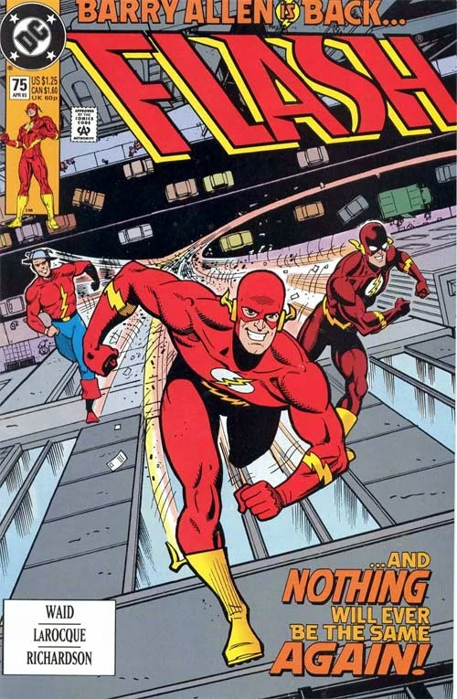

O Retorno de Barry Allen (1993)
A HQ de 1993 mostra a ousadia de Mark Waid. O autor, que tinha a missão de fazer com que Wally West fosse aceito como novo Flash, promove o retorno de Barry Allen que aparece subitamente no natal. Conforme a história avança vemos a insegurança de Wally West crescer com as atitudes questionáveis de seu mentor.. e os velocistas começam a se perguntar: aquele é realmente Barry Allen?